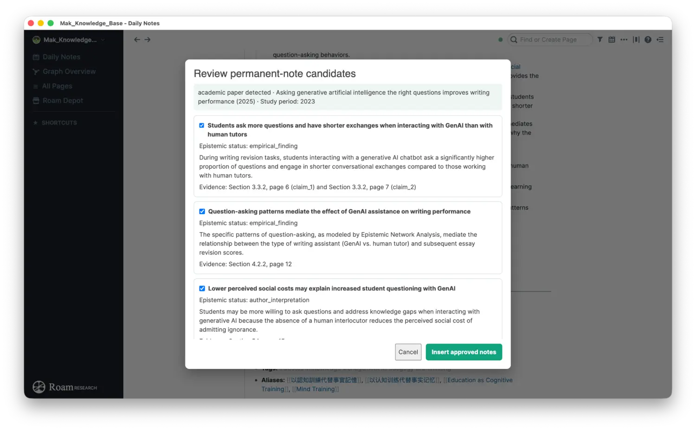
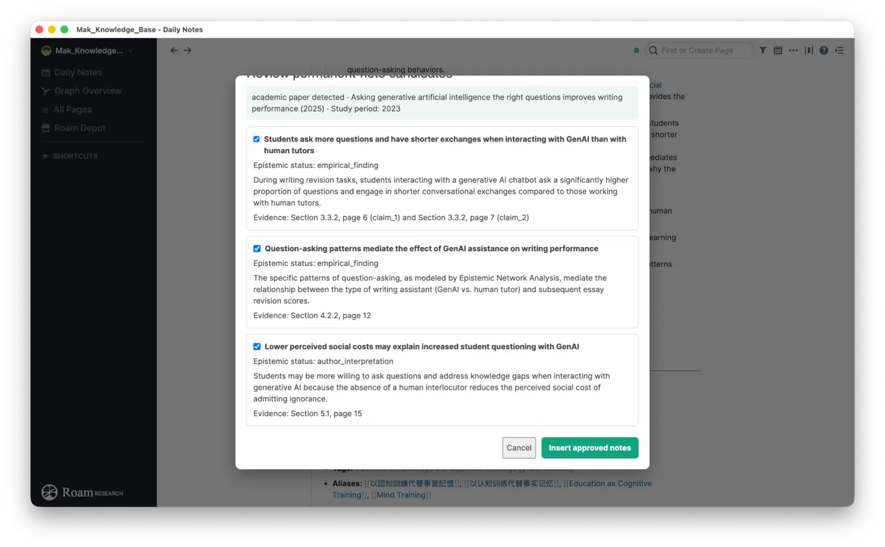
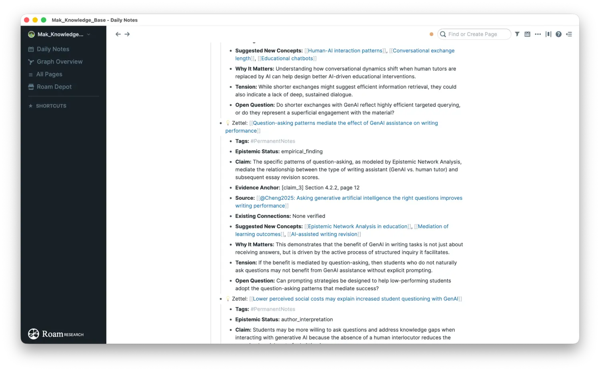
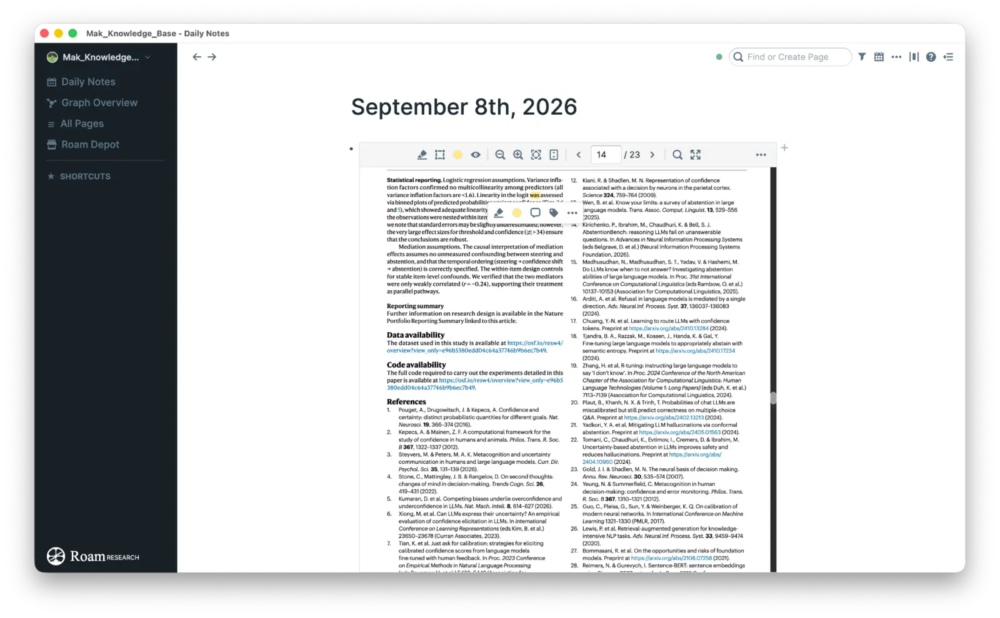
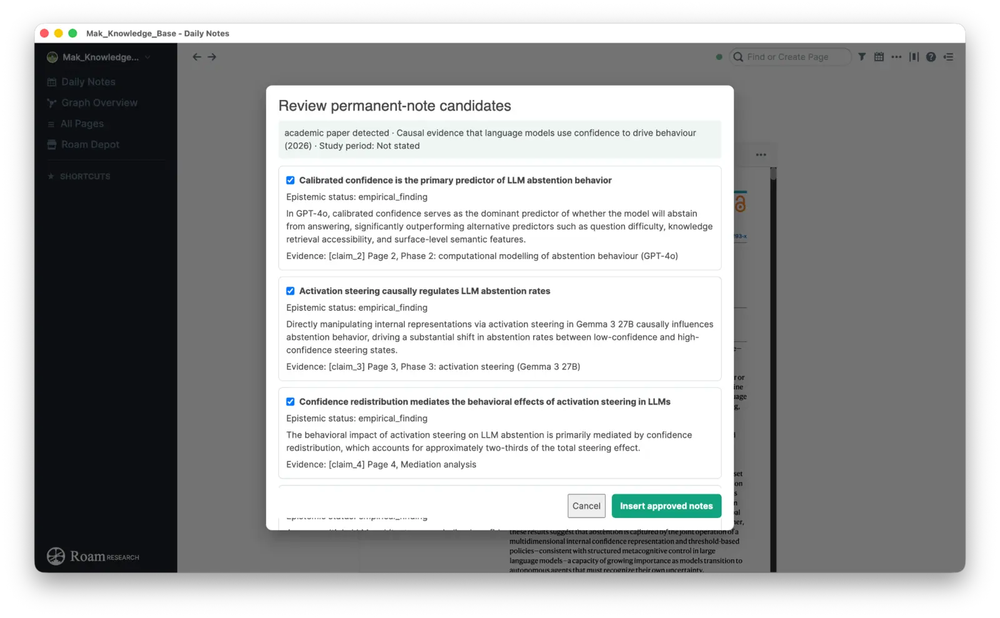
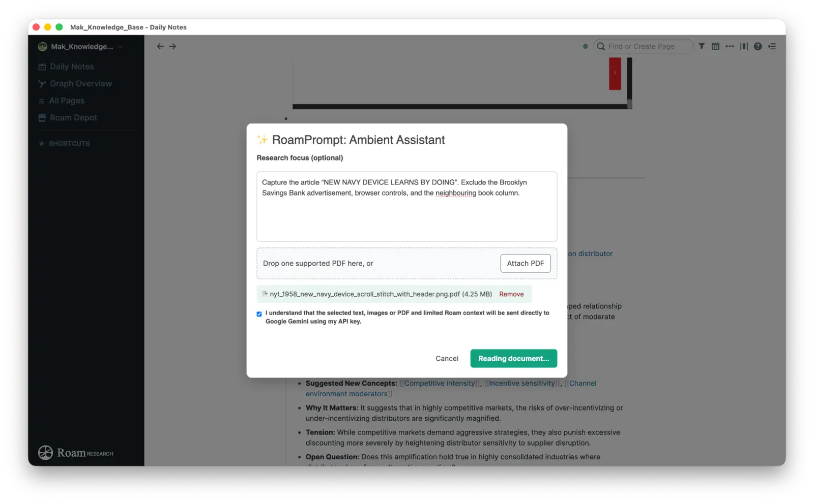
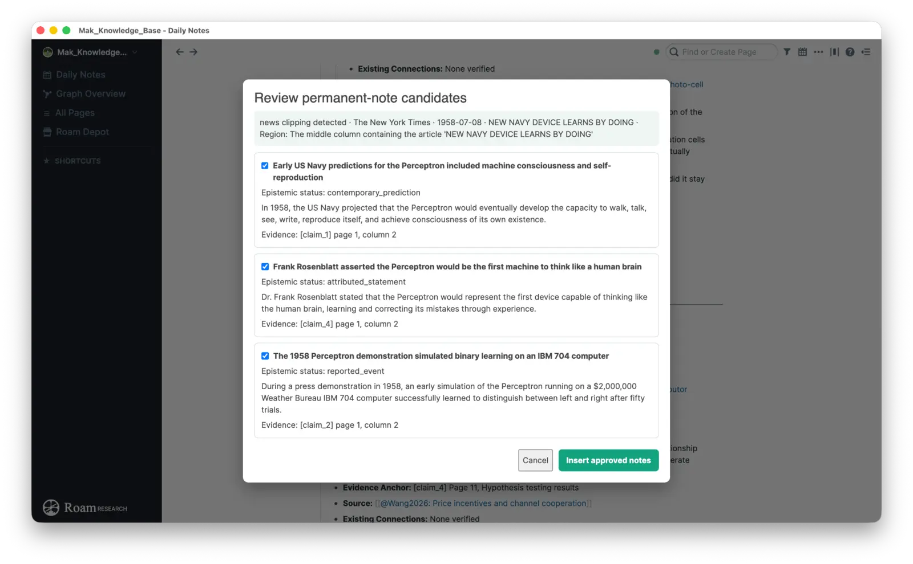

Read
Preserve source identity, research context, and evidence locations.
A Puli Consulting knowledge tool
RoamPrompt brings source-grounded AI directly into Roam Research—helping scholars, writers, and knowledge workers read notes, images, academic papers, books, reports, news articles, and scanned clippings, then turn key ideas into structured notes and reviewable atomic cards without leaving their graph.
v0.4.5 · Reliability and privacy update · Roam Depot PR #1442 open
From source to system
Preserve source identity, research context, and evidence locations.
Build a QEC note that separates findings, interpretation, and uncertainty.
Approve only candidates that deserve a place in your graph.
Link ideas deliberately without inventing relationships.
Inside RoamPrompt

Select or reject each candidate. Claims remain paired with epistemic status and evidence locations.

Keep source identity, evidence, method, synthesis, limitations, and open questions together.

Each Zettel carries one coherent point—even when related observations gain meaning together.
Document workflows
Run RoamPrompt: Read PDF on Current Page. RoamPrompt finds the synced attachment, reads it with Gemini after consent, and presents candidate findings with page and section locators for review.


Attach an image-only clipping PDF and identify the target headline when useful. RoamPrompt separates the article from advertisements and neighbouring columns, then distinguishes reported events, attributed statements, and contemporary predictions.


Why RoamPrompt
Read, review, and insert structured knowledge without moving the workflow into a separate AI application.
Process academic papers, books, reports, news articles, and image-only clippings while preserving the correct source type.
Turn key source content into QEC or News Source Notes and reviewable Zettelkasten cards built for reuse and connection.
Keep evidence anchors and epistemic status visible while separating existing graph links from suggested concepts.
The Zettelkasten series
This forthcoming LinkedIn series traces a line from early slip boxes to AI-assisted reading—while keeping source judgement and authorship with the researcher.
Slip boxes grew from centuries of external-memory and retrieval practices—not from a modern productivity trend.
LinkedIn article forthcomingNiklas Luhmann treated his Zettelkasten as a research partner: a system that could return surprising connections.
LinkedIn article forthcomingAn atomic note is a focused, reusable, source-aware proposition—not a sentence merely copied from a page.
LinkedIn article forthcomingAI may accelerate reading, but evidence, uncertainty, and the decision to keep an idea must remain visible and human.
LinkedIn article forthcomingEach card is ready to link directly to its LinkedIn article as soon as the post is published.
BYOK today · broader choice ahead
RoamPrompt does not supply a shared key. Create your own Gemini API key with Google, then enter it only in the locally loaded RoamPrompt settings until the Roam Depot listing is approved. Puli Consulting does not receive that key through this website.
Planned development will extend bring-your-own-key support to additional LLM APIs, giving users more choice over model capability, availability, account, quota, and cost. These additional providers are roadmap items and are not part of the current public release.
Google’s official API-key guidance ↗Sign in, accept Google’s terms, and open API Keys.
Create a key in an appropriate Google Cloud project and copy it securely.
Open the settings for the locally loaded RoamPrompt extension and paste it into the Gemini API Key setting. After Depot approval, use Roam Research → Settings → Roam Depot → RoamPrompt.
Never put it in a Roam block, screenshot, or GitHub repository. Review quota and billing; rotate it immediately if exposed.
Documentation
Promote · Research · Co-develop
We welcome conversations with Roam practitioners, researchers, educators, extension developers, and institutional partners interested in promoting RoamPrompt or co-developing responsible, source-grounded knowledge workflows.